Karten
28 Schlachtfelder, jedes in vier Größen (Klein, Normal, Groß, Riesig). Dazu kommen eigene Karten aus
dem Karteneditor – auch als .s3karte-Datei von Freunden.
Inhalt – alle Karten

Grasebene Karte 1 · etwa 320 × 320 m (Normal)
Flach und offen – ideal für Reiterei und Fahrzeuge.

Hügelland Karte 2 · etwa 360 × 360 m (Normal)
Hügel geben Höhenvorteil: mehr Reichweite, stärker im Nahkampf.
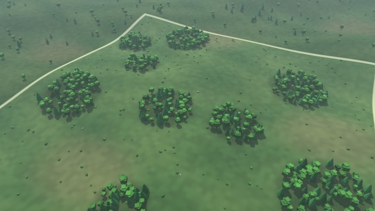
Waldtal Karte 3 · etwa 360 × 360 m (Normal)
Wälder schützen vor Beschuss und bremsen Reiter und Fahrzeuge.

Gebirgspass Karte 4 · etwa 440 × 440 m (Normal)
Hohe Berge an den Flanken, ein Pass in der Mitte. Steile Felsen sind unpassierbar.

Dorf Karte 5 · etwa 360 × 360 m (Normal)
Ein Dorf mit Häusern, Scheunen, Kirche und Wachtürmen – alle lassen sich besetzen.
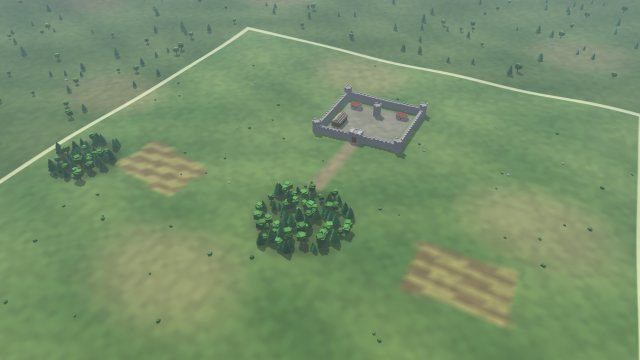
Burg Karte 6 · etwa 400 × 400 m (Normal)
Eine Burg mit Mauern, Türmen und Torhaus im Norden. Blau verteidigt die Mauern.

Flussübergang Karte 7 · etwa 400 × 400 m (Normal)
Ein breiter Fluss teilt das Feld. Nur an zwei Furten kommt man hinüber.

Seenplatte Karte 8 · etwa 420 × 420 m (Normal)
Drei Seen zwischen den Heeren, dazwischen schmale Landbrücken.

Wüste Karte 9 · etwa 440 × 440 m (Normal)
Heiße Dünen, eine Oase mit Palmen und verlassene Lehmhäuser.

Schlucht Karte 10 · etwa 400 × 400 m (Normal)
Eine tiefe Schlucht mit steilen Wänden. Nur über zwei Felsbrücken geht es hinüber.

Hochlandfestung Karte 11 · etwa 440 × 440 m (Normal)
Eine Burg auf einem Hochplateau. Wer die Höhe hält, hat den Vorteil.
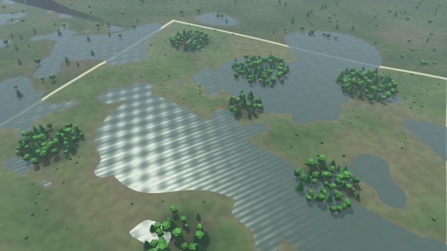
Sumpfland Karte 12 · etwa 380 × 380 m (Normal)
Seichtes Wasser und Morast bremsen jeden Vormarsch. Wälder bieten Deckung.

Große Steppe Karte 13 · etwa 600 × 600 m (Normal)
Riesiges, trockenes Feld für Massenschlachten.
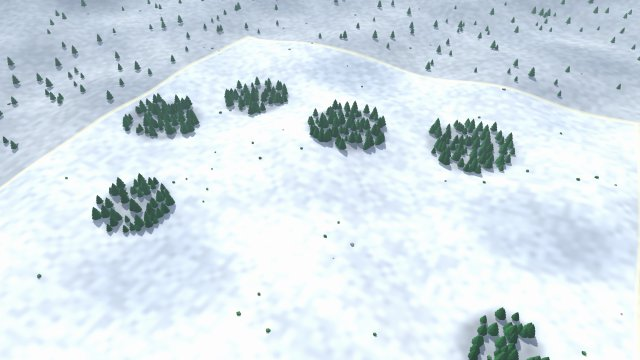
Schneefeld Karte 14 · etwa 400 × 400 m (Normal)
Verschneite Ebene mit Tannenwäldern.

Königsfestung Karte 15 · etwa 420 × 420 m (Normal)
Eine mächtige Festung mit dicken Mauern, Rundtürmen und Bergfried. Blau verteidigt.

Holzkastell Karte 16 · etwa 380 × 380 m (Normal)
Antike: Palisade mit Wachtürmen und Tor auf einer Anhöhe.
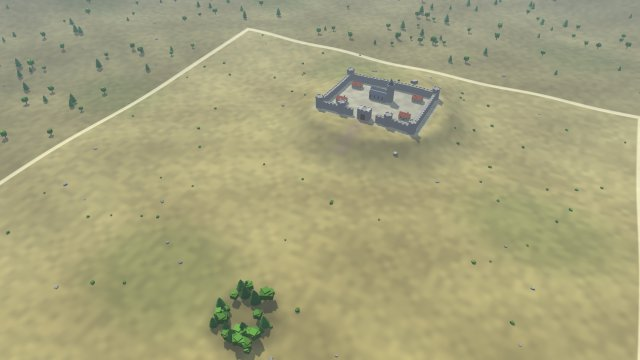
Akropolis Karte 17 · etwa 400 × 400 m (Normal)
Antike: Steinmauern und Tempel auf einem steilen Hügel.
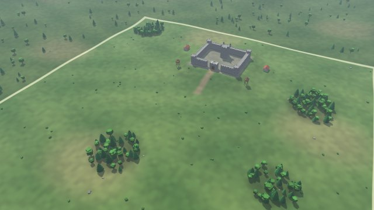
Grenzburg Karte 18 · etwa 380 × 380 m (Normal)
Frühmittelalter: kleine Steinburg mit Bergfried auf einem Hügel.

Ummauerte Stadt Karte 19 · etwa 420 × 420 m (Normal)
Hochmittelalter: Stadtmauer mit Toren, Türmen, Kirche und Gassen.
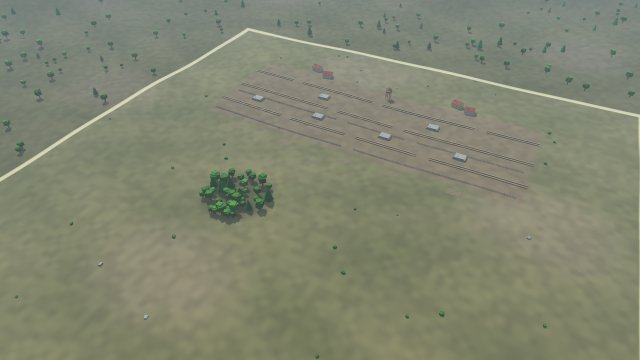
Grabenlinie Karte 20 · etwa 400 × 400 m (Normal)
Weltkriege: drei Grabenlinien, Stacheldraht, Minen und Bunker.
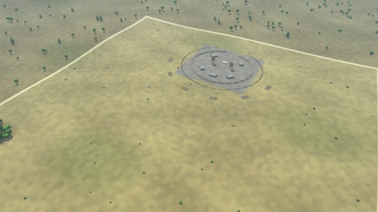
Außenposten Karte 21 · etwa 400 × 400 m (Normal)
Moderne und Zukunft: Stützpunkt mit Grabenring, Bunkern, Draht und Minen.

Kraterrand Karte 22 · etwa 440 × 440 m (Normal)
Ein Ringwall wie ein erloschener Vulkan – nur zwei Durchgänge, in der Mitte ein Hochplateau.
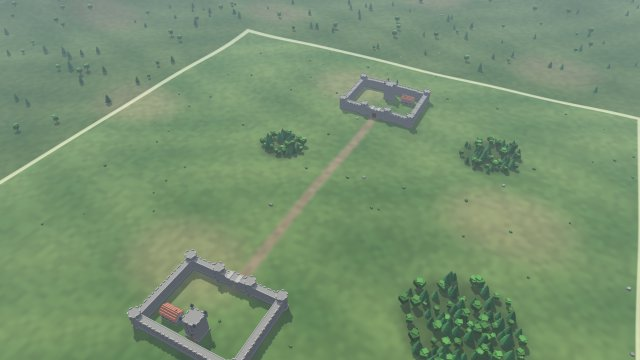
Zwei Burgen Karte 23 · etwa 460 × 460 m (Normal)
Zwei Burgen stehen sich gegenüber. Wer seine hält und die andere bricht, gewinnt.

Stufenhügel Karte 24 · etwa 400 × 400 m (Normal)
Ein Terrassenhügel in der Mitte: jede Stufe bringt Höhenvorteil – oben ist es eng.
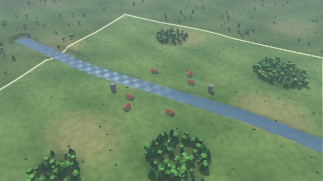
Die Brücke Karte 25 · etwa 400 × 400 m (Normal)
Ein tiefer Fluss, eine einzige Furt in der Mitte – dazu zwei Weiler am Ufer.
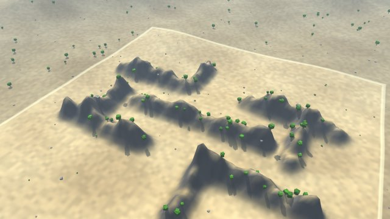
Felslabyrinth Karte 26 · etwa 420 × 420 m (Normal)
Steile Felswände bilden Gassen und Kessel – Reiter und Geschütze tun sich schwer.

Gletscherspalten Karte 27 · etwa 400 × 400 m (Normal)
Eisfeld mit tiefen Spalten. Nur über Schneebrücken kommt man hinüber.

Inselkette Karte 28 · etwa 420 × 420 m (Normal)
Seen trennen die Heere – zwischen ihnen drei schmale Landbrücken.